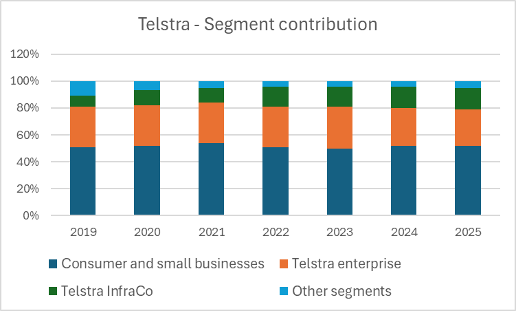
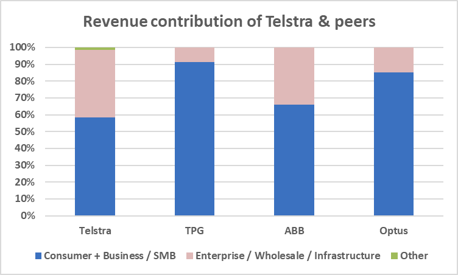
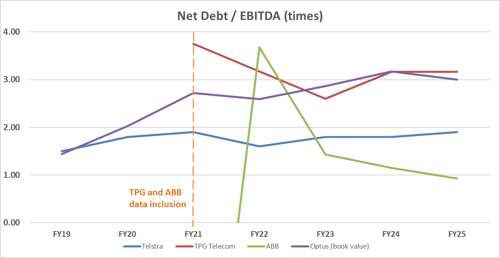
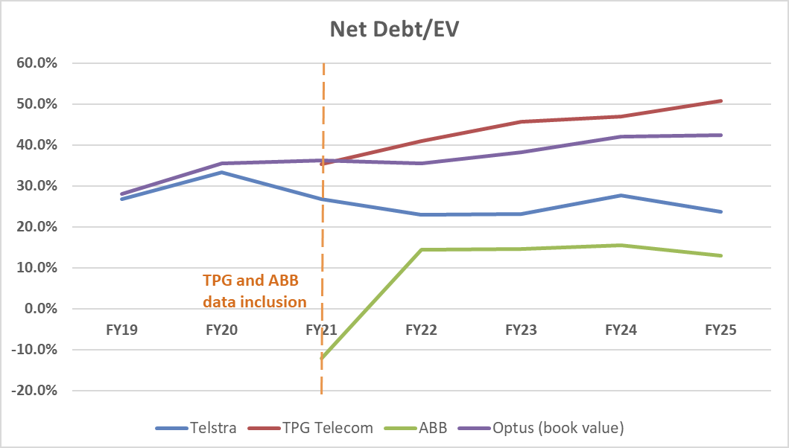

Capital structure comparisons are only appropriate in context with similar peer companies in a multitude of factors, including size, industry, location and further firm specific factors outside the scope of this report. In Figure 3, a consistent half of the revenue generated by Telstra is through services provided to regular consumers and small businesses, 30% derived through enterprise telecom and the rest an assortment of support services. Given this, the appropriate comparisons to be drawn against Telstra in this case would be TPG Telecom (TPG), Optus, as the Australian segment of Singtel Group, and Aussie Broadband (ABB), as they operate within the Australian consumer and business telecommunications market alongside enterprise services as a secondary, as seen in Figure 4. Hence, the selected comparables for capital structure assessment to Telstra hold similar regulatory and geographical environments and operate within similar industries.


Not all data from the selected peer companies is suitable for direct comparison. Specifically, FY2019 to FY2020 data for both TPG and ABB has been excluded, and Optus's market value of debt and equity has been estimated rather than directly observed.
ABB was listed on the ASX in late 2020, meaning pre-IPO market data is unavailable. Furthermore, ABB's highly aggressive growth profile during this period, with revenue growing approximately 90% in FY2019 to FY2020, would not be representative of its stabilised capital structure and would distort peer comparisons.
For TPG, the merger between VHA and TPG Corporation in 2020 left the combined entity with oversized leverage of approximately 3.8x ND/EBITDA, far outside its optimal capital structure. Including this transitional period would therefore misrepresent TPG's target leverage.
Lastly, as Optus is not separately listed, observable market values are unavailable. Book value debt as reported by its parent company, Singtel Group, has been used as the most reliable available proxy (Figure 9). Where available, market values of equity for all other firms are based on year end market capitalisation as reported in financial statements.
It can be seen from Figure 6 that the ND/EBITDA ratio of Telstra is maintained at approximately 1.5x, the lowest among the big three network operators in Australia. Similarly, its ND/EV has remained within 5 percentage points of 29% (Figure 7). Thus, given the relatively stable debt metrics Telstra maintains despite changing credit environments after the 2022 interest rate increase (Reserve Bank of Australia n.d.), the evidence suggests Telstra's historical average debt level is optimally maintained.
Conversely, ABB had the most variation in ND/EBITDA and ND/EV, going negative in FY21 and reaching 4x EBITDA following its acquisition of Over The Wire (Figures 6 and 7). In FY23 to FY25, the company maintained constant debt and grew its EBITDA, which stabilised its debt metrics at approximately half of Telstra, as would be expected for an asset light business model entering the maturity of its business cycle.
The ND/EBITDA and ND/EV of Optus and TPG display a similar trend in both companies, as can be seen in Figures 6 and 7, where both have experienced stagnant growth and taken on more debt since FY24. In comparison to Telstra, this increasing debt load can be attributed to high capital expenditure for both companies due to investment in their 5G networks, as well as weaker cash flows to support said investment. Thus, the strong earnings of Telstra, in addition to tight cost controls, have allowed the company to keep its high debt ratings.

Note: ABB's FY21: net cash position, ND was negative. Market capitalisation is measured around financial year end where available; differences in observation date may affect Net Debt / EV.
Note: Net debt includes lease liabilities to better reflect the capital intensive nature of telecommunications infrastructure. This differs from some company reported leverage metrics, which may exclude leases for covenant or adjusted reporting purposes.

As Optus is not separately listed, three approaches to estimating its capital structure were compared before one was adopted for the analysis above.
| Method 1 | Method 2 | Method 3 | |
|---|---|---|---|
| Measure | Book value: Taking debt and equity as reported by management. | Extrapolating from Singtel Group's debt ratio | Market cap weighted EV/EBITDA of comparison companies |
| Benefits | Definite figures, in addition to management's superior knowledge of the internal structure of the company, are better than those of investors. | In addition to having market values, Singtel Group would seek to maintain Optus's capital structure similar to its own to maintain good credit ratings. | Indirect market values with peer companies operating in the same market as direct competitors |
| Drawbacks | No market values, therefore, the value of debt and equity may not fully reflect market expectations | Substantially different regulatory and macroeconomic environments to the operations of Optus | Metrics lean heavily towards Telstra's due to its disproportionately large market capitalisation and not direct market value. |
| Method 1 was chosen for moderate reliability and independence of other data points in order to minimise confounding variables. | |||
Figure 9 - Calculations based on data from Singtel annual reports and management discussion reports FY2019 to FY2025
This page reproduces Part B only, which I wrote, from a five person group report submitted for FINC2012 Corporate Finance II at the University of Sydney, 2026. My co-authors' sections are not included. Figure numbering follows the original report.
Evelyn Lieu. github.com/evelynlieu1